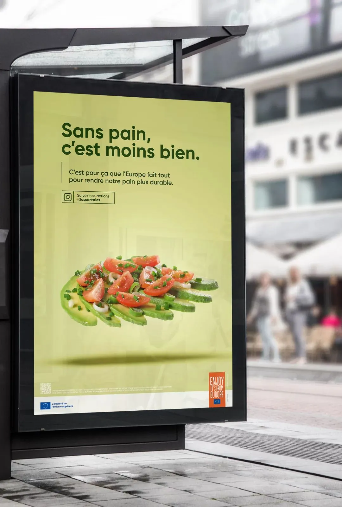
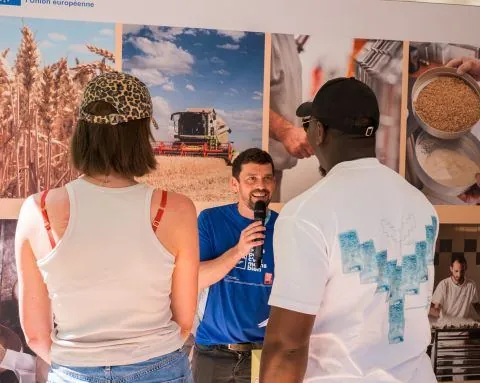
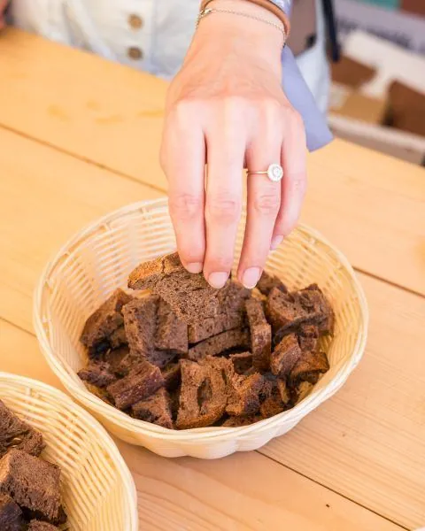
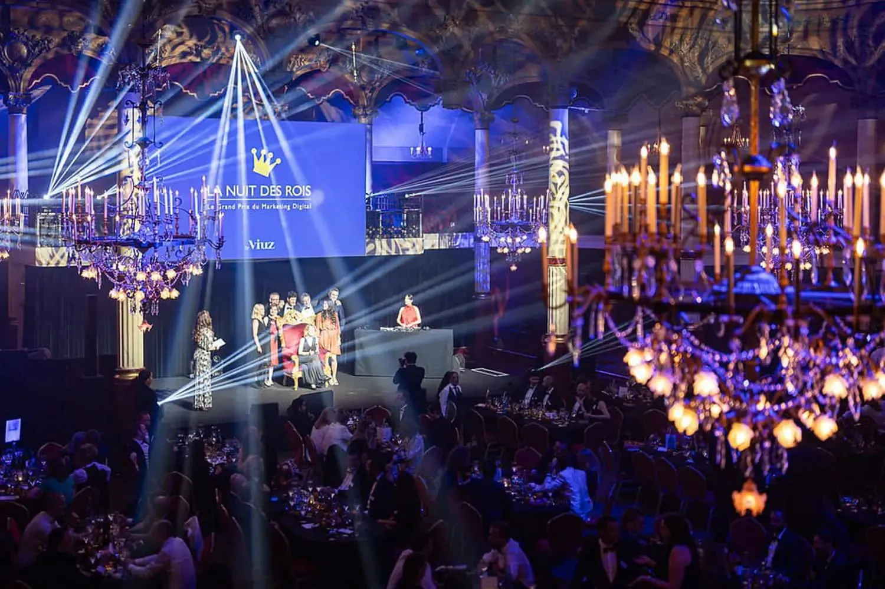
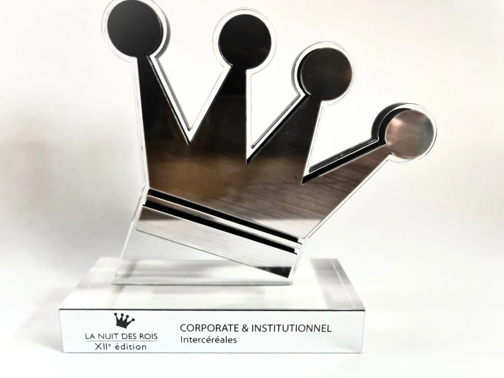

Vidéo
La Disparition.
Court-métrage de la campagne : un monde sans pain, pour qu'on le voie enfin.

Les 18-35 ans mangent de moins en moins de pain. Le pain se fait oublier.
Les 18-35 ans perdent l'habitude du pain. 35% en mangent plusieurs fois par jour, contre 60% des Français. Pour inverser ça, une campagne d'une ampleur rare : la France et la Belgique, trois ans, plusieurs organisations de la filière réunies, cofinancée à 70% par l'Union européenne. Aligner autant d'acteurs autour d'un seul message, ça ne va pas de soi.
Co-pilote de la campagne, je suis côté décisionnel : la stratégie, la création, l'organisation. La direction, pas l'exécution. À cette échelle, sur deux pays et trois ans, l'essentiel du travail est là, arbitrer, aligner, garder le cap.
Trois enjeux dans un seul dispositif : redonner le goût du pain aux jeunes, rendre les métiers de la filière attractifs, et montrer une filière attentive à la durabilité. Une campagne grand public qui est aussi une campagne d'image pour tout un secteur.
Le concept de la campagne : « Sans pain, c'est moins bien. »
Au cœur, un court-métrage, « La Disparition ». Un monde où le pain s'efface, pour qu'on le voie enfin. Plus de cent retombées presse en France et en Belgique.
Autour, presque tous les supports imaginables. Affichage dans sept villes étudiantes puis dans le métro et le RER, festivals comme les Vieilles Charrues, le FISE de Montpellier, une douzaine de salons étudiants, médias en ligne, un ambassadeur et des créateurs food.
Et du live, là où les jeunes passent leurs soirées. Des plateaux Twitch avec Samuel Etienne, Domingo et d'autres, dont le premier jamais accueilli au Salon de l'Agriculture. Le pain sur deux pays et trois ans, dans le flux plutôt que dans une pub de plus.
Aligner des institutions, deux pays et des dizaines de supports autour d'une seule idée, c'est le vrai métier d'une campagne à cette échelle.
France + Belgique · 70 % cofinancé par l'UE
Au centre : « Sans pain, c'est moins bien ».
Sur deux pays et trois ans, sans que le message se dilue.
Court-métrage de la campagne : un monde sans pain, pour qu'on le voie enfin.




